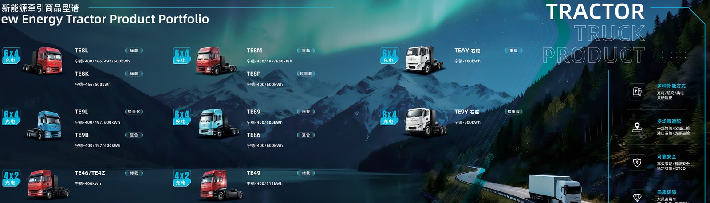

Mining haul roads are where electric trucks pay for themselves fastest, and trolley assist is the technology that makes the math work at scale. On a long uphill haul, a diesel truck burns most of its fuel fighting gravity; an electric dump truck on trolley assist draws that energy from the grid through an overhead catenary instead of from its own battery, cutting energy cost by about 40 percent. For a fleet running hundreds of cycles a day, that 40 percent is the difference between a project that pencils and one that does not. This guide explains how EV truck trolley assist works on mine haul roads, what it costs, and the 3-6 year payback operators are seeing in practice.
The concept is not new, but batteries made it practical. A Dongfeng EV dump truck such as the TZ5E electric dump truck carries a 400 kWh CATL LFP pack and a 282-510 kW LvKong motor, enough for the flat and downhill sections while the trolley system carries the heavy uphill pull. Pair that with a 600 kWh unit for the longest hauls and the result is a mine that barely touches diesel for traction across the whole cycle.
Trolley assist is an overhead power line, or catenary, strung along the steepest part of the haul road. The truck carries a pantograph on the cab roof that lifts to touch the line. While connected, the truck draws grid power directly for propulsion and to charge its battery, so it climbs the grade on cheap electricity rather than on stored battery energy. On the flat and downhill return, the pantograph drops and the truck runs on its pack, regenerating energy on the way down and feeding it back into the battery.
The table below shows a single loaded uphill cycle with and without trolley assist for a 400 kWh-class dump truck on a 6 percent grade.
| Cycle segment | Without trolley (battery) | With trolley (grid) |
|---|---|---|
| Uphill, loaded | draws 180-220 kWh | draws from grid, battery holds |
| Flat, loaded | draws 40-60 kWh | draws 40-60 kWh |
| Downhill, empty | regens 30-50 kWh | regens 30-50 kWh |
| Net battery use per cycle | 190-230 kWh | 50-110 kWh |
By shifting the uphill pull to the grid, trolley assist roughly halves the battery energy a cycle consumes, which means smaller packs, fewer charging stops and far lower energy cost per ton moved down the haul road each shift.
Operators report about a 40 percent cut in total energy cost once trolley assist covers the uphill grade, because grid power at the mine substation is far cheaper per kWh than the diesel or battery energy it replaces. On a haul road with a long, steep climb, the trolley section can carry 60-80 percent of the daily traction energy, and the battery only tops up on the flat and regenerative downhill. For a fleet of 20 dump trucks each running 20 cycles a day, a 40 percent energy saving is a seven-figure annual line item that flows straight to the project margin.
The catenary, substation extension and pantograph hardware typically cost $1.5-4.0 million per kilometer of equipped haul road, depending on terrain and span length. A mine with 3-5 km of steep grade therefore invests $5-20 million in trolley infrastructure. That sounds large, but it is measured against the diesel it displaces and the smaller battery packs the trucks then need. Budget the substation upgrade (often 6-18 months lead time) alongside the road works so the system energizes with the fleet rather than a year after.
Payback comes from two streams: the 40 percent energy saving and the ability to specify smaller, cheaper battery packs. A 400-600 kWh pack on a dump truck runs $40,000-90,000; trolley assist can let a fleet step down a pack size on some routes. Combine that capital saving with the annual energy saving across hundreds of daily cycles and most operations reach payback in 3-6 years, after which the trolley system is pure margin. Mines with high diesel prices and long steep hauls hit the short end of that range.
New trolley-ready dump trucks are built with the pantograph mount, the high-current collector and the control software already integrated, which is the clean path. Retrofitting an existing EV truck is possible but costs $80,000-200,000 per unit for the pantograph, the reinforced roof structure and the control integration, and it risks warranty gaps. For a new fleet, specify trolley-ready from the factory; for an existing battery-electric fleet, model the retrofit against the energy saving before committing capital to the conversion.
The Southern Africa electric truck market is a natural home for trolley assist: deep open-pit and long-haul mining roads, high diesel prices and strong grid or captive-power capacity. A Southern African operator running Dongfeng EV dump trucks on a 4 km equipped grade can expect the 40 percent energy cut and a payback inside 3-6 years, with the added benefit of lower diesel exposure in a volatile fuel market. Neighboring copper and platinum belts show the same operating profile and the same attractive returns.
Trolley assist is not an all-or-nothing choice. Many mines run a hybrid of trolley-ready dump trucks on the steep grade and standard battery-electric units on flat or short hauls, sharing the same depot chargers between shifts. The 400 kWh TZ5E pairs naturally with a 600 kWh unit on the longest cycle, so the fleet right-sizes each truck to its own road rather than buying one pack for every duty. That mix keeps capital focused on the trucks that need the biggest batteries.
Plan the catenary and the depot as one system. The substation that feeds the trolley also charges the flat-haul units overnight, so size it for both the grid traction draw and the depot load; a 3.0-4.0 MVA feed is typical for a mine with trolley plus a 20-truck battery yard. Bring the electrical engineer and the haul-road designer into the same room early, because the span length and the gradient decide both the catenary cost and the energy saving that pays it back in 3-6 years.
The maintenance story is also favorable. With the uphill pull taken by the grid, the battery and the motor see lower peak load on the grade, which extends pack life toward the 4,500-cycle warranty and trims cooling duty. Mines that track cost per ton moved consistently show trolley assist improving both the energy line and the maintenance line on the same trucks, compounding the return well beyond the headline 40 percent energy cut.
Trolley assist suits long, steep, high-cycle haul roads. If your grade is short, shallow or low-volume, the catenary cost will not amortize and a plain battery-electric fleet with 120-360 kW depot charging is the better fit. Also confirm grid or captive power is available at the mine; without cheap electricity the 40 percent saving shrinks. Used selectively, trolley assist is one of the highest-return decarbonization investments in heavy mining, turning the uphill climb from a cost center into a grid-powered advantage that compounds every shift.
Ready to electrify your fleet? Contact Shaanxi Fenghan Trading — authorized Dongfeng EV truck exporter. WhatsApp: +86 153 1943 1311 | Email: sales@fenghan-trade.com | dongfengevtrucks.com
🌐 Our Network: Fenghan Trade (SAGMOTO/SHACMAN Truck Export) · heavy duty mining dump truck 6x4 8x4